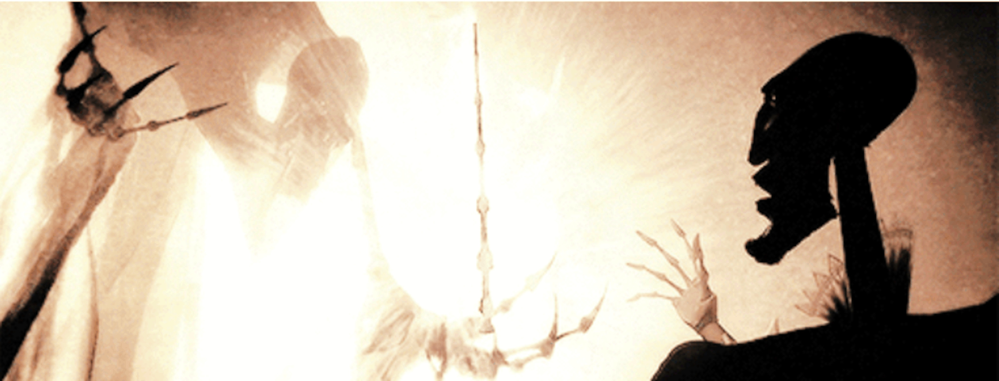
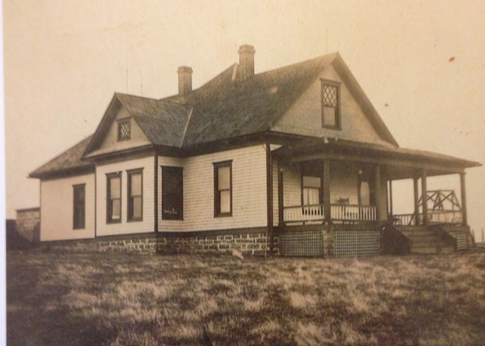

Los Tres Hermanos - Final 1
El hermano mayor, armado con la varita de saúco, viajó a un pueblo distante, donde un mago con el que había tenido una disputa vivía. Buscándolo, no tardó en encontrarlo y lo retó a un duelo mortal. Naturalmente, con la varita de saúco como su arma, no pudo sino ganar el duelo que siguió.
Dejando a su enemigo muerto en el suelo, el hermano mayor se dirigió a una posada, donde se jactó en voz alta de la poderosa varita que había arrebatado a la Muerte y de cómo la hacía invencible.
Esa misma noche, otro mago le robó la varita mientras dormía. La Muerte se llevó al hermano mayor esa misma noche.